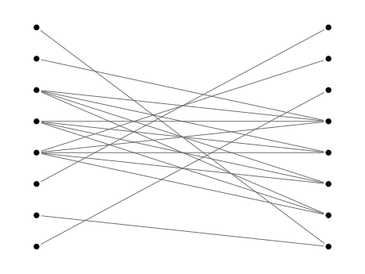
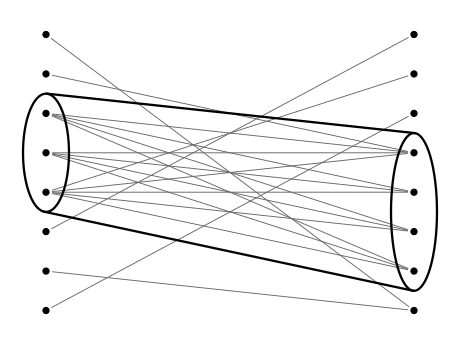

This is a section removed from this post, kept only for reference, regarding the random initialization of joint types for the hill-climbing algorithm.
(tl;dr naive approaches don’t satisfy our constraints so we build types incrementally, with constraint-propagation after each uniformly selected component—arguably still naive, but the output looks random)
$$$$
1 Definitions
We work on a single string of symbols. A pair of consecutive symbols on the string is called a joint symbol (or simply joint).
The set of all joints on the string, makes a bipartite graph, with left and right symbols making a left and right subsets.

We want to find a pair of sets (a joint type) on this bipartite graph:

These joint types logically correspond to product type in type theory,
\[\frac{s_0 \in A ~~~~ s_1 \in B}{(s_0,s_1) \in A \times B}.\]
containing all joints where each symbol belongs to the respective subset of the type.
Because the set of possible solutions is exponential, we proceed by hill-climbing, using atomic modifications to the working solution, re-initializing multiple times from random joint types.
Hence our interest in generating random joint types, given a particular set of joints.
2 The Problem
Although the inclusion/exclusion of all available symbols for a right and left union form a simple Hamming basis in the space of possible types, e.g.
+---------- A ----------+
| |
{s0, s1, s2, s3, s4, ...} × {s0, s1, s2, s3, s4, ...},
0 0 0 0 1 ... 1 1 0 0 1 ...
| |
+---------- B ----------+randomly sampling this space and then counting the affected joints by the type rule:
\[\frac{s_i \in A ~~~~ s_j \in B}{(s_i,s_j) \in A \times B}\]
won’t always produce types that are optimal w.r.t. the joints they cover—in the sense that some symbols included in one side’s union type could have no joint with any of the symbols of the opposite union.
On the bipartite graph, this would correspond to unconnected vertices inside the subgraph of the joint type (but connected outside of it).
Fixing the randomly generated types by dropping unconnected symbols as a normalization step will produce a biased generation pointing away from the inclusion of any symbol with few associated joints.
Similarly, enforcing “tightness” by including random neighbors for every dangling vertex, will be biased in the opposite direction.
3 Naive Workaround
For an unbiased, uniform sampling of the space, we could re-sample every time “tightness” is violated, but experiments will show this is not reliable. We try this method on our dataset of choice: a 2006 snapshot of the English Wikipedia (XML format) truncated at different magnitudes from the start:
Filename Size (N) Size (bytes)
enwik1 10^1 10 B
enwik2 10^2 100 B
enwik3 10^3 1 KB
enwik4 10^4 10 KB
enwik5 10^5 100 KB
... ... ...For a given string, we collect all joint occurrences of pairs of symbols,
form top left and right
unions, randomly select symbols with a 0.5 probability in each union
and check whether the “tightness” property holds.
We repeat this at least \(10^6\) times for each dataset.
The unlikelihood of generating “tightness” by accident is immediately noticeable on a large enough dataset:
Filename P_tight (%)
enwik1 1.56208 %
enwik2 0.00157 %
enwik3 0.06044 %
enwik4 0.54991 %
enwik5 0.00000 %Intuitively: for a sufficiently large and diverse dataset, there are enough symbols which form isolated joints (two symbols that only appear in one joint together) that a random assignment either selects both or neither (the only arrangements that don’t break tightness) in every case becomes exponentially close to 0.
4 Uniformly Sampling Tight Subgraphs
We can call a bipartite graph “tight” if it contains no isolated vertex, i.e. no vertex without an edge connecting it to an opposing vertex.
Since the left and right unions of all joints in a string contain only symbols that have at least one joint with another symbol in the string, the top joint type is “tight”.
The number of subgraphs in a “tight” graph that are also “tight” is the number of ways, for each subset of one of the unions, to select at least one vertex neighboring each vertex in that subset. In other words, given a subset of either the left or right union, the number of possible accompanying subsets on the opposite side is the number of ways to select at least one vertex for each set of neighbors of vertices in the given subset.
This reduces to the problem of counting hitting sets, (which is equivalent to counting set covers) for each subset of one of the unions, which is intractable in general. This means that sampling types by unranking uniformly sampled integers is equally intractable.
5 Conclusion
The best option we have at this point is to enforce the tightness invariant progressively through a sufficiently randomized selection, hoping that no bias arises.
By randomly selecting a side, a symbol in that side and a selection for that symbol (included/excluded), then propagating the choice by eliminating possible symbols that would be made dangling if later selected or introducing a random symbol among its neighbors if none are so far selected, we achieve a uniform-looking, 100% “tight” random type generation.